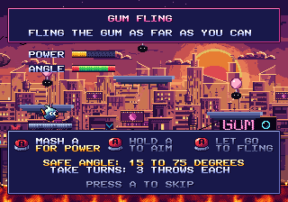
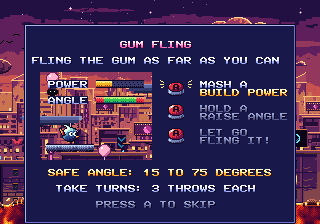
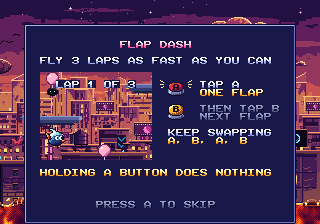
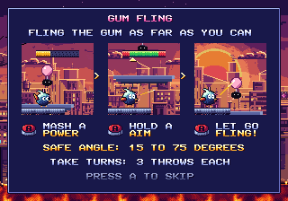
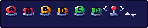

Shown before GET SET; A skips. Gum Fling is the example on all three. Each draft is shown at 2x then 3x. Bird, background and font are the game sheets; buttons, stick, bars, needle, gum and slab are new hand-typed grids. Costs are in README.md.
Name and goal on top, controls in a strip below, the example plays full size in the open arena.

One card: example window on the left, one line per control on the right, the current step lights up.


Three windows side by side, one per step, all looping at once.

